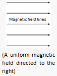
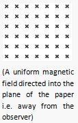
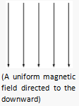
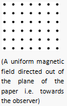
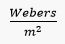
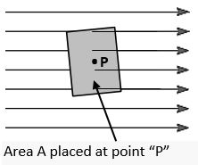
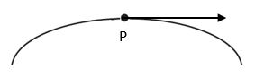
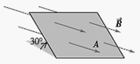

Electromagnetism
Many applications of electricity are based on the fact that electric current passing thru a conductor produces a magnetic field around the conductor or vice versa, i.e. when a conductor moves thru a magnetic field, an electromotive force (emf) is generated and hence current could flow if there is a complete loop.
This is called electromagnetism. The operation of such devices or machines like the
electric motor, generator, the transformer, the inductor coils, etc. are all based on this phenomenon.
-
The Magnetic Field
- It is a region in space wherein a force acts on a charge moving through it.
- Example:
- The space around a magnet
- The space around a current-carrying conductor
- One characteristic of a magnetic field is its direction which is usually indicated by a set of lines drawn in the magnetic field called magnetic field lines (also called magnetic lines of force or lines of induction).
- Note: When the lines are curved, the magnetic field is non-uniform and the direction at any point is taken by the tangent to a line passing through that point.
    -
Magnetic Flux (∅)
- A set of magnetic field lines or a group of lines taken or computed as one
- Units of Magnetic Flux
- For CGS System
- 1 Maxwell = 1 line
- For MKS System
- 1 Weber = 108 lines
- Ex. ∅ = 5 x 10^-4 Weber means
- (5 x 10^-4)(10^8) or 5 x 10^4 field lines
- Vector Addition uses special methods which are not arithmetic. The particular method used depends on the orientation of the vectors and how many vectors are being considered.

-
Magnetic Flux Density (β) at a point
- Magnetic flux passing per unit area of a surface placed at the point perpendicular to the magnetic field.
- Let:
- ∅ = the flux that passes through area A
- βP = the flux density at pt "P"
- if ∅ is in Webers and A in m2
- β is in or Tesla (T)
- Note:
- 1. If the surface area A is PERPENDICULAR to β then,
- ∅ = βA
- 2. If the surface area A is NOT PERPENDICULAR to β then,
- ∅ = βAcosθ
- where θ is the angle between the normal to the surface and β
- Magnetic flux density is a vector quantity and its direction is the same as the direction of the magnetic field at a point.

 βP (Tangent to a field line passing through the point) -
Sample Problems
- 1. The figure below is a perspective view of a flat surface with area 3cm2 in a uniform magnetic field. The magnetic flux through this surface is +0.9 mWb. Find the magnitude of the magnetic field.
- 
- 2. Determine the flux that passes through the area as shown on the figure below.